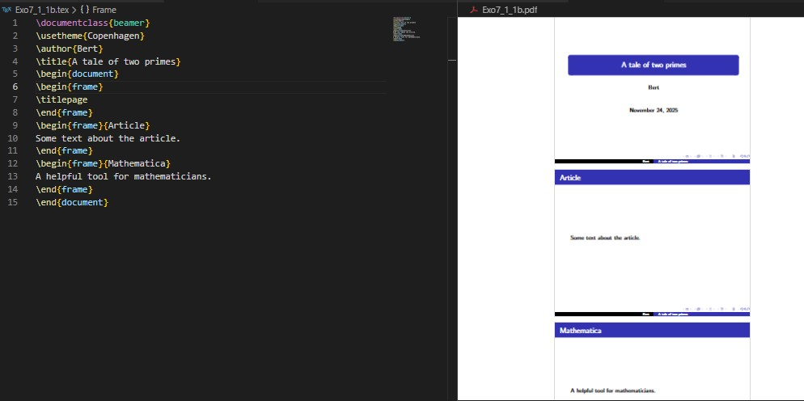
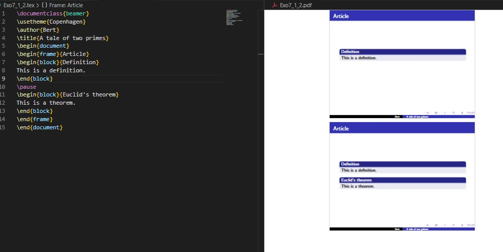
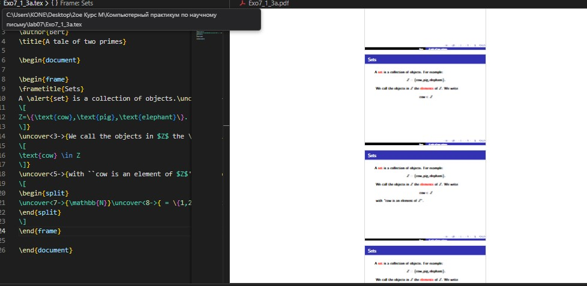
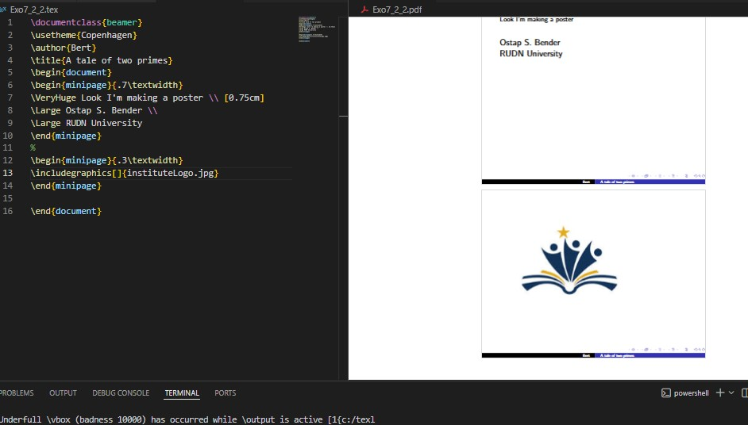
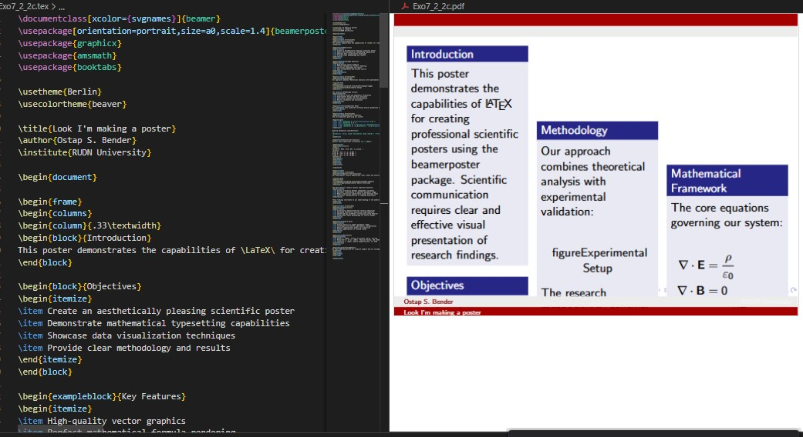
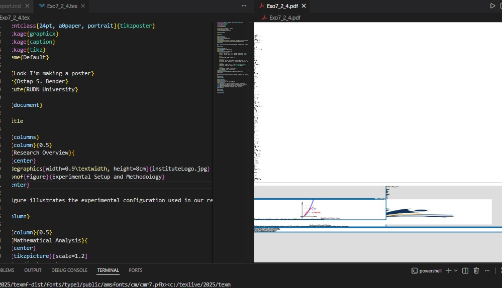
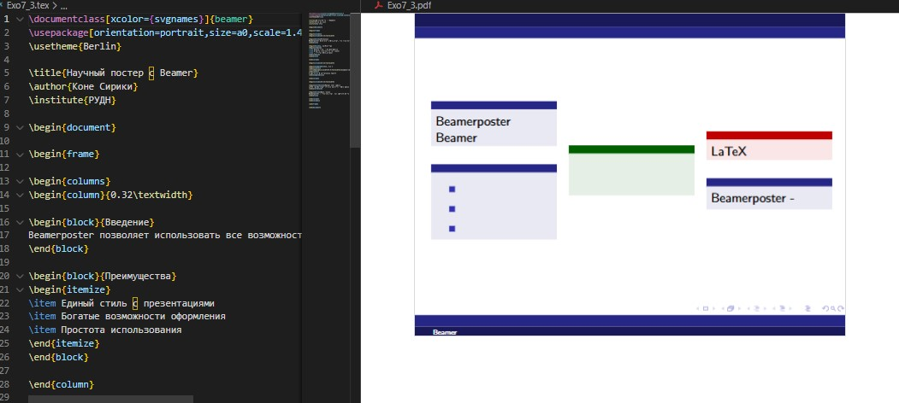
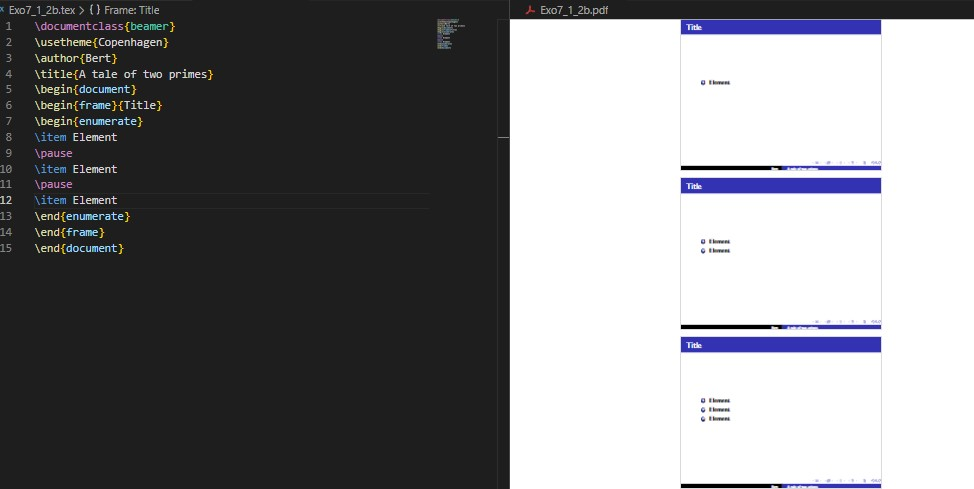

{width=80%}
{width=80%}Целью данной лабораторной работы является освоение создания презентаций и постеров в LaTeX с использованием пакета Beamer и других инструментов для визуального представления научных работ.
The purpose of this lab work is to learn how to create presentations and posters in LaTeX using the Beamer package and other tools for visual presentation of scientific work.
Для создания презентаций в LaTeX используется класс документов beamer. In LaTeX it is possible to make presentations using the beamer document class.
Beamer предоставляет профессиональные темы и возможности анимации. Beamer provides professional themes and animation capabilities.
{width=80%}
Основные элементы: титульный слайд, frame окружения, блоки и колонки. Main elements: title slide, frame environments, blocks and columns.

{width=80%}Команды \pause и \uncover для динамического появления контента.
\pause and \uncover commands for dynamic content appearance.
Паузы с \pause

{width=90%}Точное управление с \uncover

{width=90%}Три основных метода создания постеров в LaTeX. Three main methods for creating posters in LaTeX.
a0poster

{width=90%}beamerposter

{width=90%}tikzposter

{width=90%}Постер с a0poster

{width=90%}Постер с beamerposter

{width=90%}В ходе лабораторной работы №7 я освоил создание презентаций и постеров в LaTeX. Изучил работу с классом Beamer для создания динамических презентаций с паузами и эффектами появления. Освоил три основных метода создания постеров: a0poster, beamerposter и tikzposter, изучил их преимущества и особенности применения.
In this lab work 7, I mastered creating presentations and posters in LaTeX. I studied working with the Beamer class for creating dynamic presentations with pauses and appearance effects. I mastered three main methods for creating posters: a0poster, beamerposter and tikzposter, studied their advantages and application features.